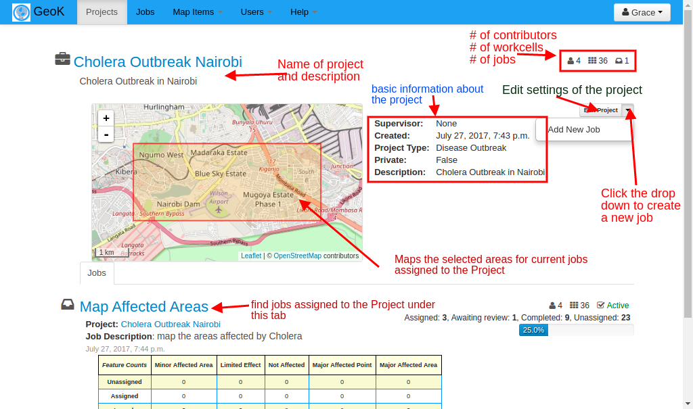
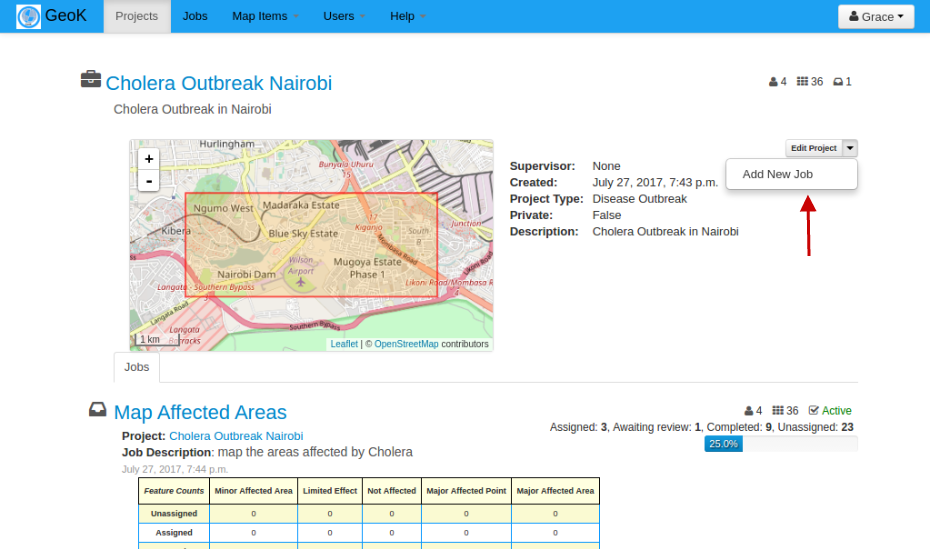
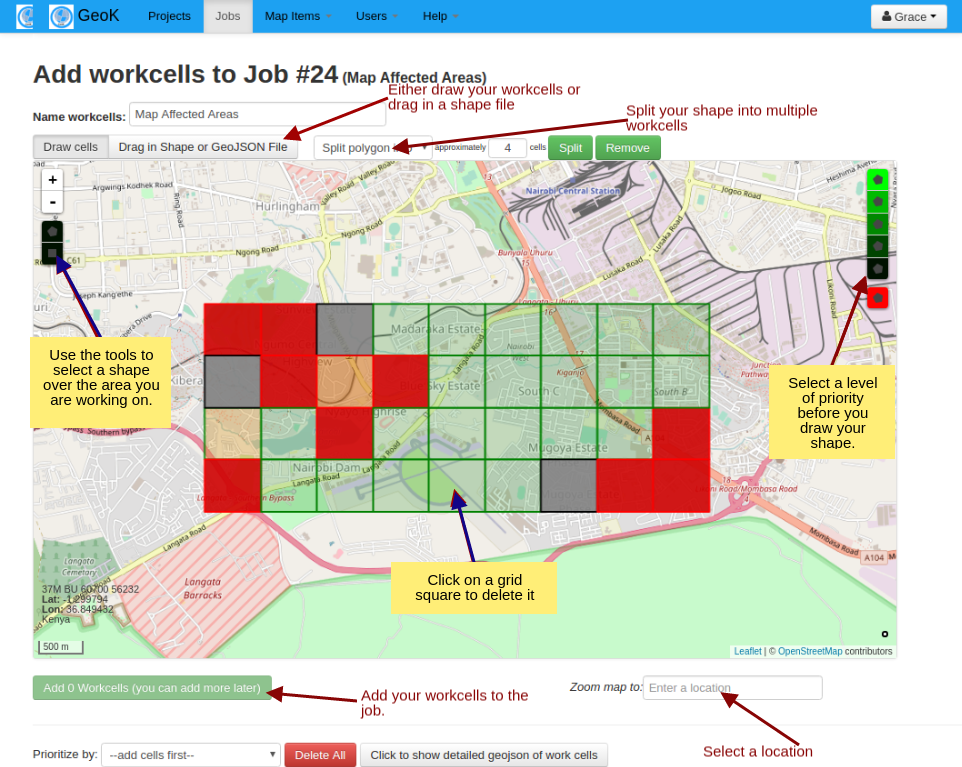
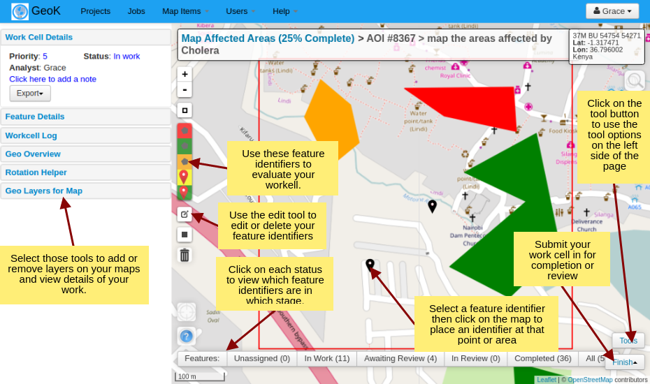
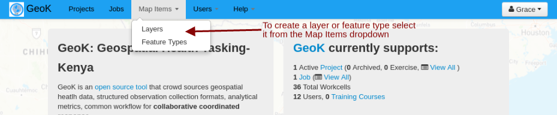
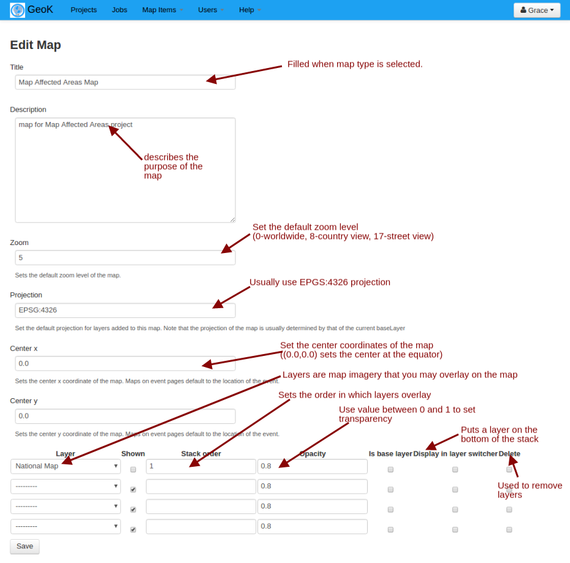
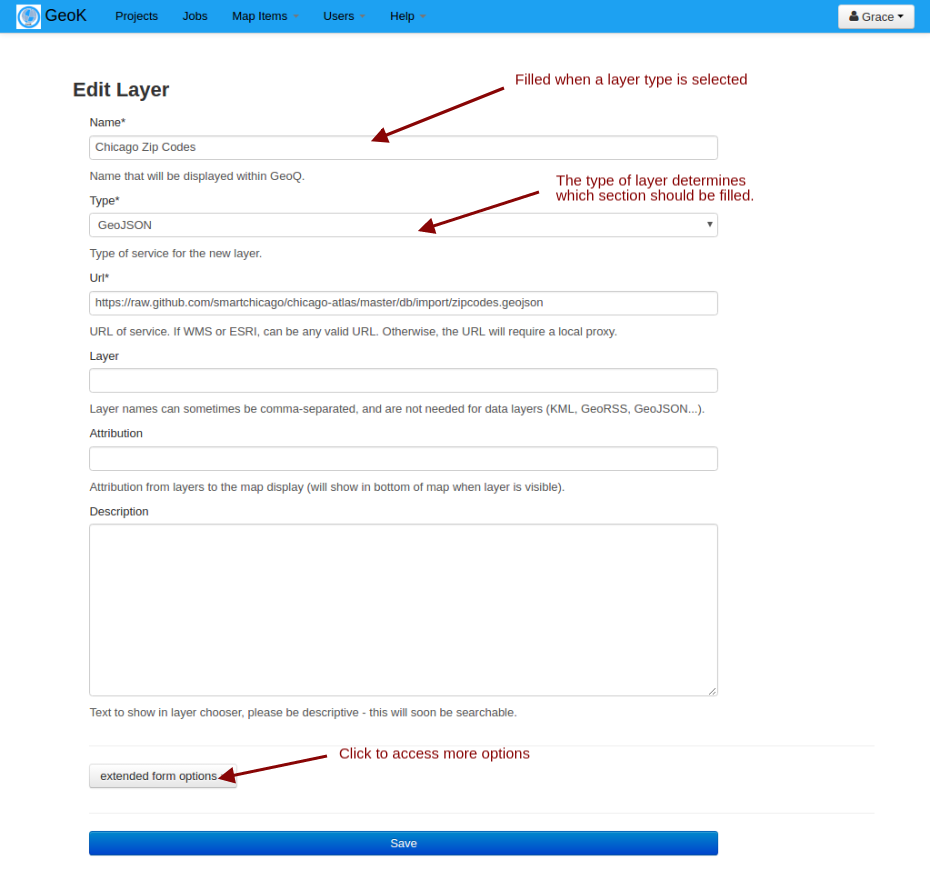
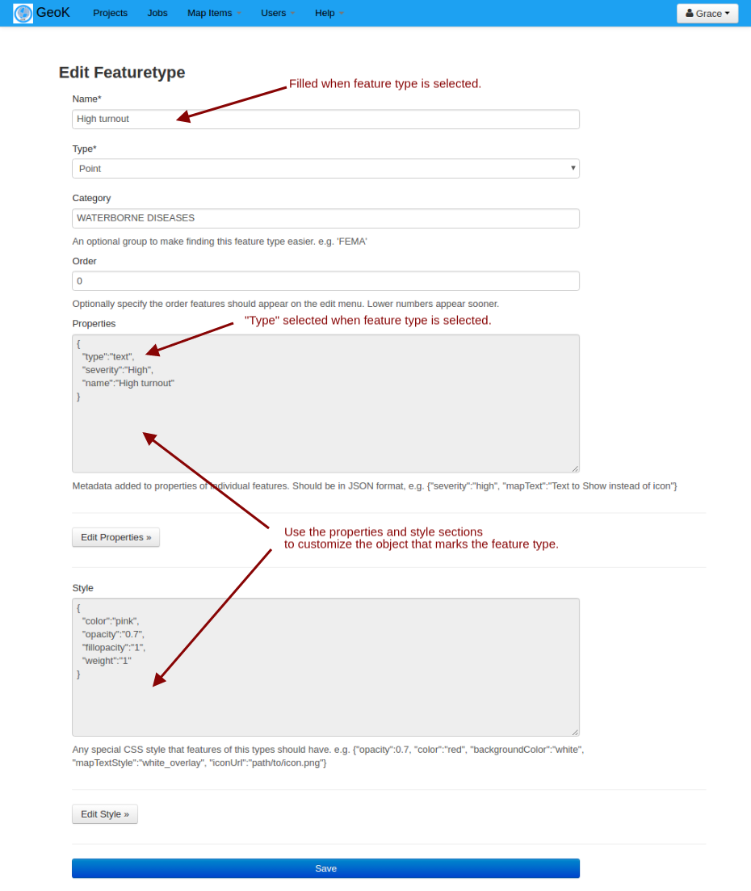

Sodo User Guide
|
Create Project
The highest element within a Sodo workflow, a Project will normally encompass all the activities surrounding a particular event. Projects can be thought of as a folder that will organize all work done for that event.
To create a Project, simply click the Project
(Note: you will need to have a privileged account
to have access to this function):
.png)
You will find the following tools and information once you create/select your Project. On this page you can edit your Project, add a New Job view information on the Project, and view the Jobs assigned to the Project:  |
|
Creating a Job
A Job is a task that Users will complete in each Work Cell (the area that the User wants evaluated) 
Creating Work CellsWork Cells are specific areas where the Job will be completed. Once you select 'Create Workcells' you will be able to select the area where you want your job executed and prioritize each Work Cell: Working on the JobOnce you select a Work Cell, you can begin evaluating the area based on the Job given:  |
|
This video gives an overview of operating the system. {# #} #}
|
|
Maps
To create a new map, layer, or feature, select it from the dropdown box on the maps tab and click ADD NEW Create New MapMaps may be created at the administrative level to organize the set of layers needed for a job as well as the initial view  |
|
Layers
Different layers may be created to customize your map.Layers are map imagery that a user may overlay on the map while completing a job. Please note that all sections of the Create New Layer do not necessarily have to be filled out, but rather depend on the type of layer being created.  |
|
Features
Feature types may be created to place on the map while completing a job.  |
|
Below is the map analytics section. Clicking on one feature type(marker) will dispaly the button to view the nearest health facility. Once the Show nearest button is clicked the map will zoom to the nearesthealth facilites within 500 meters from the feature type. |
|
Use of Mobile Devices
Sodo allows mobile smartphones (iPads, iPhones, Androids) to log on to the system to review information, but currently does not support drawing features or editing workcells. We are working on this functionality. Note that if you are unable to log in, it's likely because you have Mobile Safari or Chrome set to not allow cookies. Disabling this setting frequently fixes the problem. |